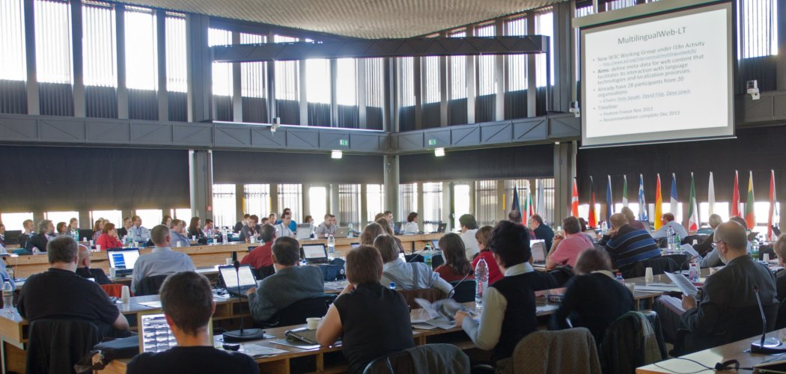
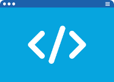
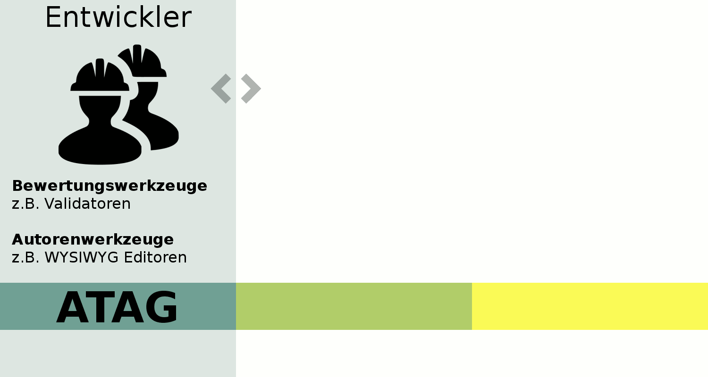
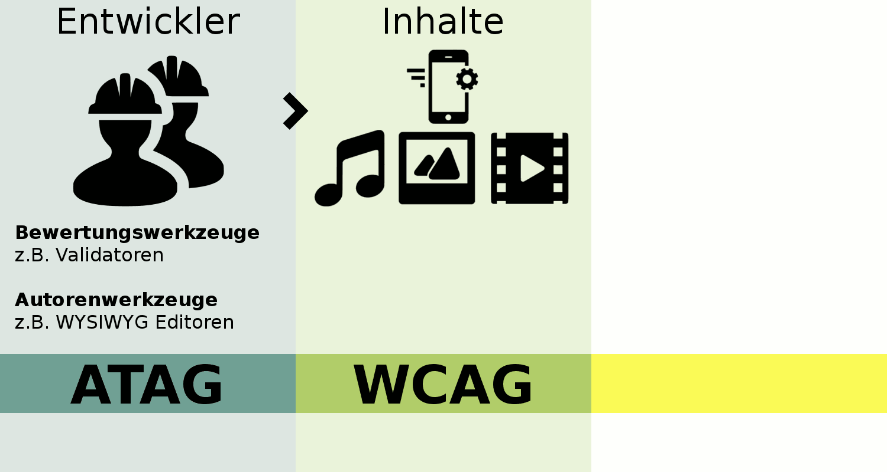
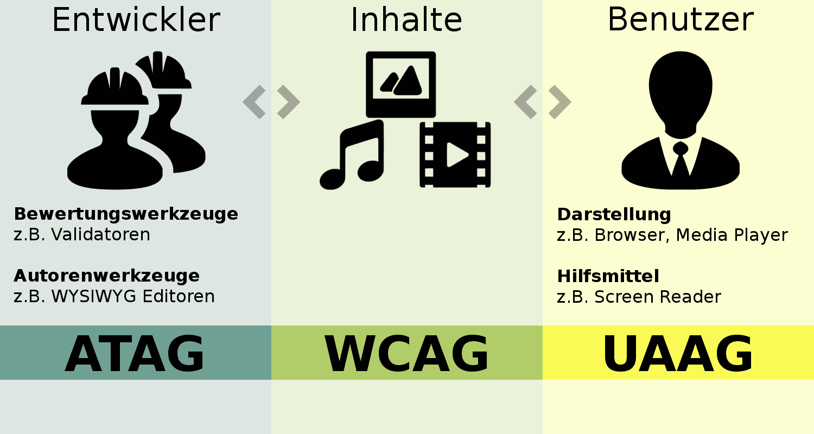
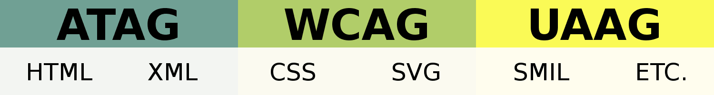

WCAG
Web Content Accessibility Guidelines
Author: Jonas Jared Jacek · License: CC BY-NC-ND 4.0Themen
- Einordnung
Die Geschichte des World Wide Web und die Arbeit des W3C. - Web Accessibility
Die Arbeit des W3C für Barrierefreiheit im World Wide Web. - WCAG 2.0
Blick auf die Web Content Accessibility Guidelines.
Einordnung
Geschichte des World Wide Web und die Arbeit des W3C.
Geschichte
- 1989 entwickelt Tim Berners-Lee das Mesh
- am CERN, in Genf, Schweiz.
- 1990 wird das Mesh umbenannt in World Wide Web.
Das Mesh
 Vorschlag für ein "Informationsmanagementsystem" das "vage, aber spannend" ist.
Vorschlag für ein "Informationsmanagementsystem" das "vage, aber spannend" ist.
Sir Tim Berners-Lee

Tim Berners-Lee hat die erste Webseite, den ersten Browser und den ersten Webserver entwickelt.
Er schrieb die ersten Spezifikationen für URLs, HTTP und HTML.
World Wide Web Consortium (W3C)
1994 gründete Tim Berners-Lee das Normungsgremium W3C.
Mission
Die Entwicklung von Protokollen und Richtlinien (Standards), die das langfristige Wachstum des World Wide Web sicherstellen und voll ausschöpfen.
Standardisierungsorganisation
Das W3C ist die Standardisierungsorganisation für Technologien des World Wide Web
Ähnlich:
Deutsches Institut für Normung (DIN), und der International Organization for Standardization (ISO).
Standards
Das W3C entwickelt hunderte von Standards. Zum Beispiel: HTML, XML, CSS, SVG, WOFF, WCAG, etc.
Mitglieder
Mehr als 450 Organisationen sind im W3C aktiv.
Auszug der Mitgliederliste:
- Arron Eicholz, Microsoft
- Alex Danilo, Google
- Edward O'Connor, Apple Inc.
- Jonathan Watt, Mozilla Corporation
- Erik Dahlström, Opera Software
- Anthony Grasso, Canon Inc.
- …
Durchsetzungsfähig
- Gesellschaftlich breit aufgestellt
Regierungsvertreter, Akademiker (R&D), Privatunternehmen, Organisationen, … - Offene Prozesse
(Größtenteils) transparente Prozesse, Beteiligung/Feedback ist möglich und gefordert. - Freie Nutzung
Standards sind frei zugänglich, kostenfreie Nutzung, weite Verbreitung ist angestrebt.
W3C - Multilingual Web Workshop
Web Accessibility
Die Arbeit des W3C für Barrierefreiheit im Web.
Barrierefreiheit
"Die Kraft des World Wide Web ist in seiner Universalität begründet.
Der Zugang von allen, unabhängig von Behinderung ist ein wesentlicher Aspekt dieser Universalität."
Tim Berners-Lee
Wen betrifft das?
"Eine Milliarde Menschen oder 15% der Weltbevölkerung, leben mit irgendeiner Form von Behinderung."
Weltbank
Ein Web für alle Menschen
... unabhängig von ihrer Hardware, Software, Netzwerkinfrastruktur, Sprache, Kultur, geographischer Lage oder körperlicher oder geistiger Fähigkeit.
Hardware und Software
Die Inklusionsarbeit bzgl. Hardware und Software drückt sich u.a. durch die Zusammenarbeit mit Herstellern aus.
Beispiele: Google, Mozilla, Microsoft, Canon, Siemens.
Netzwerke
Die Inklusionsarbeit bzgl. Netzwerkinfrastruktur drückt sich u.a. durch die Zusammenarbeit mit und Kompatibilität zu Standards anderer Normungsgremien, z.B. der Internet Engineering Task Force (IETF).
Entwickelt: TCP/IP, DNS, HTTP, etc.
World Wide Web im Internet
IETF beschreibt die Technologien des Internet.
W3C beschreibt die Technologien des World Wide Web.
Internet
(IETF)
World Wide Web
(W3C)
Sprache, Kultur und Geografische Lage
Die Inklusionsarbeit bzgl. Sprache, Kultur und geografischer Lage, findet u.a. innerhalb der W3C Internationalization (i18n) Activity statt.
Entwickelt: Working Group übergreifende Richtlinien und Tutorials.
Körperliche und geistige Fähigkeiten
Die Inklusionsarbeit bzgl. körperlicher und/oder geistiger Fähigkeiten, findet u.a. innerhalb der W3C Web Accessibility Initiative (WAI) statt.
Entwickelt: ATAG, UAAG und WCAG.
W3C-Ökosystem
Working Groups & Task Forces entwickeln Standards.
W3C
HTML
Working Group (WG)
HTML5
...
WAI
Task Force
WA WG
WCAG
2.0
Web Accessibility Komponenten
3 Guidelines für Web Accessibility:
- Authoring Tool Accessibility Guidelines (ATAG)
- Web Content Accessibility Guidelines (WCAG)
- User Agent Accessibility Guidelines (UAAG)
Web Accessibility Komponenten
Authoring Tool Accessibility Guidelines (ATAG)
Web Accessibility Komponenten
Web Content Accessibility Guidelines (WCAG)
Web Accessibility Komponenten
User Agent Accessibility Guidelines (UAAG)
Web Accessibility Komponenten
Grobes Mapping der Guidelines auf die technischen Spezifikationen:
Web Accessibility Initiative (WAI)
Ca. 150 Menschen aus Industrie, Behindertenorganisationen, Behörden und Forschungslabors.
Web Accessibility Working Group (WA WG)
Auszug der Mitgliederliste:
- Steve Faulkner, The Paciello Group
- Joshue O Connor, InterAccess
- Loretta Guarino Reid, Google
- Cynthia Shelly, Microsoft
- Andrew Kirkpatrick, Adobe
- Drew LaHart, IBM
- Gregg Vanderheiden, University of Wisconsin
- …
WCAG 2.0
Blick auf die Web Content Accessibility Guidelines.
WCAG 2.0
Der Guideline umfasst eine breite Palette von Empfehlungen für die Bereitstellung von Webinhalten für Menschen mit Behinderungen/Einschränkungen, u.a.:
- Blindheit und Sehschwäche
- Taubheit und Hörverlust
- Lernschwierigkeiten
- kognitive Einschränkungen
- begrenzte Bewegungen
- Sprachbehinderungen
- Lichtempfindlichkeit
- sowie Kombinationen dieser Einschränkungen
Zusammenfassung
Die folgenden Seiten enthalten eine Zusammenfassung der Web Content Accessibility Guidelines (WCAG) 2.0.
Die (normativen) technischen Spezifikationen finden Sie unter www.w3.org/TR/WCAG20.
Kernanforderungen an Inhalte
Anforderungen der WCAG an barrierefreie Inhalte:
- Wahrnehmbar
- Bedienbar
- Verständlich
- Robust
Wahrnehmbar
Stellen Sie Textalternativen für Nicht-Text-Inhalte bereit.
Wahrnehmbar
Beispiel:
Diskussion
Fragen & Diskussion.